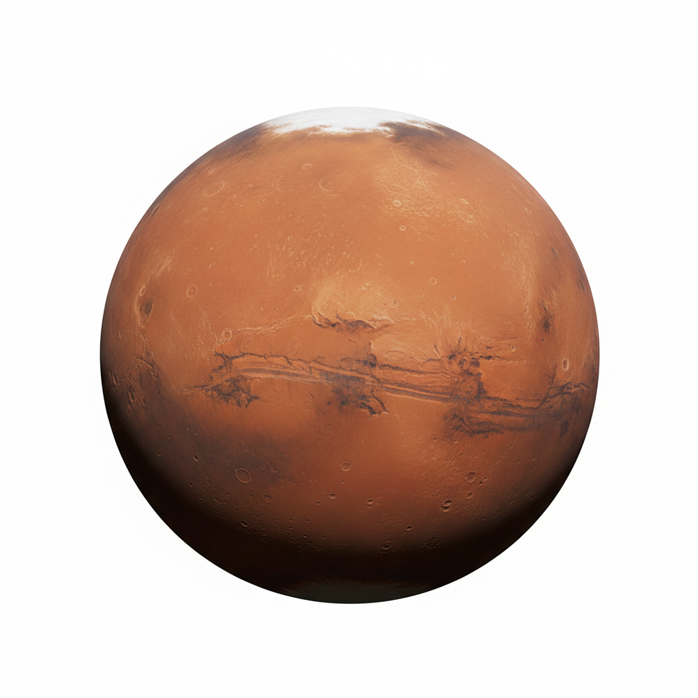

Marte, o quarto planeta a partir do Sol, é conhecido como o Planeta Vermelho devido à presença de óxido de ferro (hematita) em sua superfície, que lhe confere uma coloração avermelhada. É o segundo menor planeta do Sistema Solar, atrás apenas de Mercúrio, com um raio médio de 3.389,5 km e uma massa correspondente a 11% da Terra. Apesar de ser menor, Marte compartilha várias características com o nosso planeta: duração do dia semelhante (24 horas e 37 minutos), estações do ano (por causa de sua inclinação axial de 25,19°), calotas polares, vulcões e cânions, como o Valles Marineris e o Monte Olimpo, a segunda montanha mais alta do Sistema Solar.
A atmosfera marciana é muito fina, composta principalmente por dióxido de carbono (95,97%), com pequenas quantidades de argônio, nitrogênio e oxigênio. A pressão na superfície é apenas 0,636 kPa, cerca de 0,6% da pressão terrestre. As temperaturas variam extremamente, indo de -125 °C no inverno até 22 °C no verão, com uma média de -60 °C. A gravidade na superfície é 38% da da Terra, o que significa que um objeto pesaria cerca de 38% do que pesaria aqui.